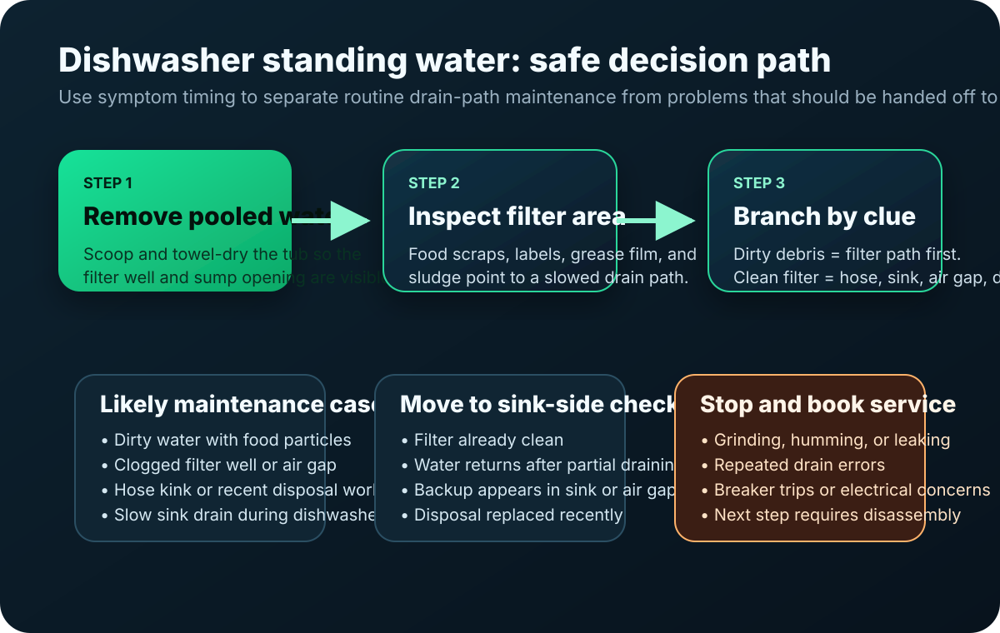
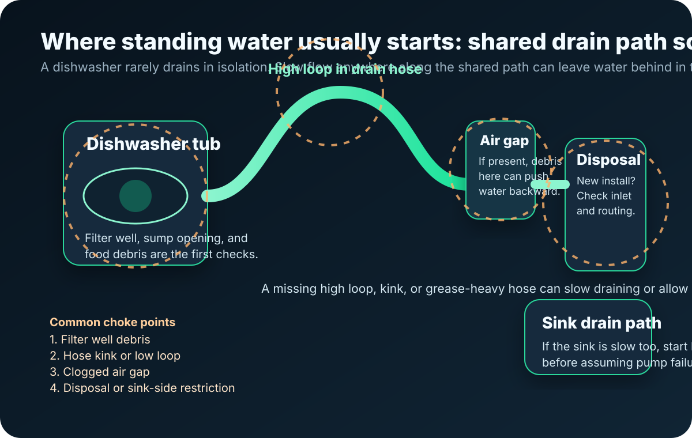

Drainage and filter checks
Dishwasher Standing Water After Cycle? 5 Checks Before You Call Repair
If your dishwasher still has water in the bottom after the cycle ends, do not keep restarting it. Start by draining the water safely, then check the filter area, drain path, and sink-side connection before you pay for service.
At a glance
Time and difficulty
20 to 30 minutes
Low-risk maintenance · Homeowner or renter
Fast answer
Quick answer
Visible water across the bottom after a cycle usually means debris in the filter well, a hose restriction, sink-side drainage trouble, or a disposal inlet problem. Start with the safe drain path checks before you assume the dishwasher itself failed.
Professional takeaway
What this symptom usually tells a technician
Standing water is a pattern, not a diagnosis by itself. The useful question is whether the machine is failing to push water out at all, or whether water is leaving and then returning through a shared drain path. That is why the most valuable clues are the filter condition, the sink behavior, and whether the symptom changed after disposal or plumbing work.
Usually points first to filter-well debris, sludge, or a slowed drain path rather than an immediate electrical failure.
Pushes the diagnosis outward toward the hose route, sink drain, air gap, or garbage disposal connection.
These are escalation clues. Routine maintenance may no longer be the right lane once those appear.
Visual guide
Two diagrams that make the drain path easier to understand


Start here
5 safe checks that solve most standing-water cases
- Scoop out the standing water first so you can actually see the filter area and sump opening.
- Remove and rinse the filter exactly as the owner manual shows, then wipe out scraps, film, and sludge from the filter well.
- Check whether the sink drains normally and whether the air gap or disposal connection looks restricted.
- Look for a kink, low spot, or recent change in the dishwasher drain hose route.
- Stop and book service if the machine still hums, grinds, leaks, or leaves water after the simple path checks are done.
Why this order matters: it prevents readers from jumping straight to pump-failure assumptions when the visible symptom is still consistent with routine drain-path maintenance.
Normal vs not normal
When water in the bottom is worth worrying about
A little water hidden in the sump can be normal on many dishwashers. What is not normal is water visibly spread across the bottom of the tub after the cycle ends, especially if it smells bad, looks greasy, or returns quickly after you clean the filter area.
That visible standing water is the clue most readers mean when they search for dishwasher standing water after cycle or water in bottom of dishwasher after cycle. It usually points to slow drainage, not just leftover moisture.
Quick diagnosis
What the water looks like — and what each type usually means
Standing water is not all the same. The appearance and timing give you strong clues about where to look first:
Often a simple drain-path slowdown — filter debris, a slight hose kink, or a partially closed sink-drain valve. Start with the filter cleaning and hose inspection.
Filter-well sludge is likely. Food particles that should have been washed away are instead collecting in standing water. A deep filter-area cleaning usually solves this.
Too much detergent, wrong detergent type, or very soft water. Excess suds slow the drain pump. Try a cycle with half the detergent or switch to a low-sudsing pod.
Classic sink-side backflow. The dishwasher drains successfully, but water from the sink or disposal flows back through a shared drain path. Check the air gap, high loop, and backflow path.
Grease buildup in the drain hose or sump. Hot-water-only cycles with a dishwasher cleaner can break this down, but severe cases may need manual hose cleaning.
If the water color is unusual, check for a rusting dish rack, a loose metal item in the sump, or hard-water mineral deposits carrying iron. This is less about drainage and more about water quality or internal corrosion.
Drain it first
How to drain a dishwasher with standing water safely
Turn the dishwasher off and let hot water cool before reaching inside. Scoop out as much water as you can with a cup or ladle, then use towels or a sponge to clear the rest. Once the bottom is mostly dry, remove the filter and clean the visible filter well so you can tell whether scraps, labels, or grease are blocking the drain path.
This first step matters because repeated test cycles can waste time and sometimes make the mess worse. Clear visibility helps you separate a simple debris problem from a deeper drain-path problem.
Brand-specific notes
Model-specific differences that change the diagnosis
Different dishwasher brands have different drain-path designs, and the same standing-water symptom can point to different root causes depending on the model:
These brands often use a chopper blade in the sump that can jam on small bones, glass shards, or plastic labels. If the chopper is jammed, debris never reaches the drain. Standing water with small debris that should have been chopped is the telltale sign. Check the sump area below the filter for foreign objects before assuming a pump failure.
Bosch dishwashers use a fine-mesh filter system that traps very small particles. This is great for wash quality but means the filter clogs faster than other brands. If your Bosch leaves standing water, the filter is almost always the culprit — even if you cleaned it recently. Check it again and scrub the mesh with a soft brush.
GE models often route the drain hose through a check valve that can stick closed after years of use. If the filter is clean and the hose path looks fine but water still sits after the cycle, the check valve may not be opening fully during the drain phase. This typically requires a technician to access and diagnose.
These brands sometimes display cryptic error codes (like "OE" or "5E") alongside standing water. The code is the more useful clue — "OE" means a drain error. If the error persists after cleaning the filter and hose path, the drain pump impeller may be obstructed or failing.
Diagnosis path
What standing water after the cycle usually means
- If the water is dirty or full of food particles, the filter area or drain path is a more likely cause than an electrical failure.
- If the filter is clean but the water still returns, the next suspects are the hose route, sink drain, air gap, or garbage disposal connection.
- If the machine hums, grinds, leaks, or shows drain-related errors, routine maintenance has probably reached its limit.
If the cycle finishes and the drain still seems nonfunctional rather than just slow, move next to Dishwasher Drain Not Working After Cycle for a symptom-specific checklist.
Unclog checks
How to unclog a dishwasher with standing water without overreaching
Most homeowner-safe unclogging starts with the obvious path: filter, sump opening, drain hose route, air gap if you have one, and the sink or garbage disposal connection. Look for grease buildup, a hose kink, or a recently installed disposal that may still have the knockout plug in place. If the hose path looks suspicious under the sink, compare those clues with Dishwasher Drain Hose Clogged Symptoms.
What you should not do is pry into sealed pump housings, disconnect wiring, or keep guessing once the next step leaves household maintenance territory. If the easy drain path looks clear but the symptom does not change, the problem may be deeper than a surface clog.
Best next branch
If the filter is already clean
A clean filter changes the diagnosis. It does not automatically mean the drain pump is bad, but it does mean you should stop treating the filter as the main suspect and move outward toward the hose and sink-side path.
Use Dishwasher Water In Bottom After Cycle But Filter Is Clean if you already did the filter work and need the next safe checks.
Timing clue
If the problem started after a garbage disposal change
A newly installed garbage disposal is one of the strongest clues in this topic. If the dishwasher stopped draining right after disposal work, the disposal inlet may still be sealed or the hose may have been reconnected poorly.
Check Dishwasher Not Draining After Garbage Disposal Replaced, Dishwasher Drains Into Sink When Running, and Dishwasher Air Gap Overflowing if the symptom lines up with sink-side plumbing changes.
Backflow clue
If water seems to come back after the cycle
Sometimes the dishwasher drains partially and then ends up with water again because the sink-side path is backing up. A slow sink, blocked air gap, poor hose routing, or disposal-side restriction can let dirty water move the wrong direction.
If that sounds familiar, read Dishwasher Drains Then Fills Back Up, Dishwasher Drains Into Sink When Running, or Dishwasher Full Of Water In The Morning for the branch that best matches the timing.
Know when to stop
When standing water means it is time to call for service
- The dishwasher still ends with pooled water after the filter area and sink-side path have been checked carefully.
- The machine hums, grinds, leaks, trips a breaker, or shows repeated drain errors.
- The next step would require opening electrical parts, pump components, or hard-plumbed connections you are not comfortable handling.
Common questions
FAQ
- Is some water left in the dishwasher normal? A small amount hidden in the sump can be normal, but visible water across the bottom after the cycle should be checked.
- Can a dirty filter cause standing water? Yes. A dirty filter or debris trapped below it is one of the most common reasons a dishwasher leaves water behind.
- Why is there water in the bottom of my dishwasher after the cycle? Start with the filter, drain path, sink connection, and garbage disposal inlet before assuming a failed pump.
Prevention
How to prevent standing water from coming back
Once you have cleared the current standing water, a few habits make it much less likely to return:
- Scrape plates well before loading. Large food particles, bones, labels, and fruit pits are the most common debris that clogs the filter and sump. A 5-second scrape saves a 20-minute cleanup later.
- Clean the filter monthly. Even with good scraping, a fine film of grease and small particles builds up. A monthly rinse under warm water — no soap needed — keeps the filter mesh clear. See the full monthly checklist.
- Run a hot empty cycle with dishwasher cleaner monthly. This dissolves the grease and detergent film that accumulates in the sump, drain hose, and spray arms. It is especially important if you often use quick-wash or eco cycles that run at lower temperatures.
- Check the drain hose routing once a year. A hose that has sagged or gotten pinched behind a new under-sink item is a slow-drain cause waiting to happen. The high loop should stay above the sink drain connection point.
- If you install a new garbage disposal, verify the knockout plug was removed. Missing this plug is a surprisingly common cause of sudden standing water after what should be routine plumbing work.
- In hard-water areas, descale quarterly. Mineral buildup narrows the internal drain passages over time. A citric-acid or commercial descaler cycle every 3 months keeps the water path wide open.
Fact check
References and fact-check notes
- Cross-check model-specific filter removal and drain-path notes with the owner manual.
- Use major manufacturer care documentation for safe cleaning and filter-maintenance steps.
- Use installation guidance for high-loop, air-gap, and disposal-connection concepts when checking sink-side drain routing.
- Keep pump disassembly, electrical diagnosis, and invasive plumbing work outside the scope of reader-safe maintenance guidance.
Keep reading